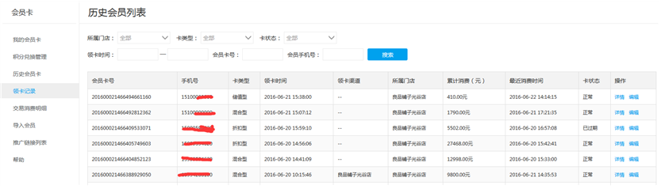
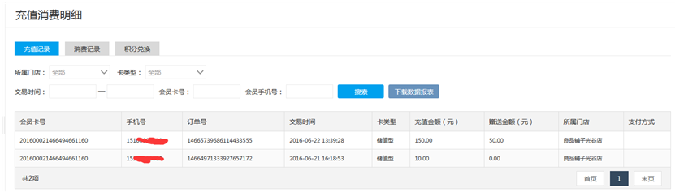
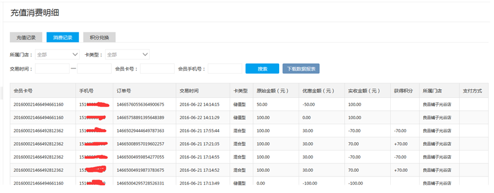
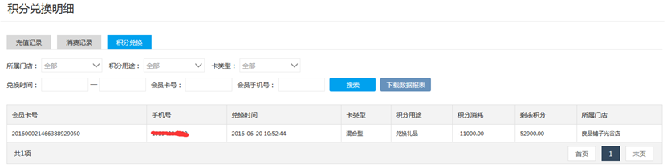

商户可在商户云平台查看会员领卡和消费记录。
1）会员领卡记录
商家进入会员卡列表页面查看门店所有会员信息，包括领卡时间、领卡渠道、累积消费、最近消费时间。点击详情可查看该会员消费记录。如下图所示：

2）会员充值记录
商户可按门店（管理账户可查看各管理门店数据）、卡类型、交易时间查询其所有会员的充值记录，同时提供按会员卡号、手机号进行快捷查询。如下图所示：

3）会员消费记录
商户可按门店、卡类型、交易时间查询其所有会员的消费记录，包括原始金额、优惠金额和实收金额和当次积分数。同时提供按会员卡号、手机号进行快捷查询。如下图所示：

4）会员积分兑换记录
会员积分是商户在会员消费中的返利激励制度。商户设置积分返利后，用户可通过多种积分用途进行积分消耗。商户可按门店、积分用途、卡类型、兑换时间查询其所有会员的积分消耗记录，包括会员当次积分消耗数和剩余积分数。同时提供按会员卡号、手机号进行快捷查询。如下图所示：
